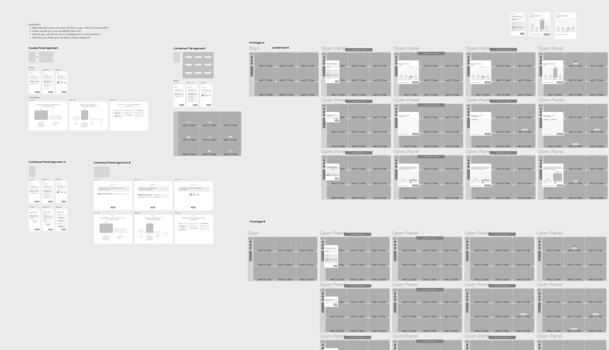

PROBLEM
How do we help teachers engage their students more in remote classes?
RESEARCH
In order to discover needs as well as the challenges associated with engagement, we conducted semi-structured interviews with 8 teachers and 7 students. Additionally we conducted informal usability studies with these participants to test various low-fidelity prototypes of the quiz and chalkboard features. Think aloud protocol was used so that we could better understand the mental model of these participants regarding how they would use these tools.
This yielded over 600 codes (stickies) which we then synthesized into categories and themes that we could share with the team. In order to mitigate bias we ensured categories reflected the views of multiple participants (multiple colors).

PERSONAS
Our primary personas were tech-savvy adaptive teachers who were open to using the full suite of features to make learning experience as fun and engaging as possible for their students.
THEMES
It's important to synthesize research data in to a form that is easily digestible by product managers, engineers, and other stakeholders on your team. These slides are examples of the themes discovered from the research. Most importantly, these facilitate a conversation around complexity and prioritization of features, as well as a plan for versioning (V1, V2, V3, etc.) feature development over time.


VALUE VS EFFORT PLANNING
The research was also extremely valuable for the product team to prioritize features based on what will be most valuable to the end users, and then to determine with engineering which of those will require the least effort. The top left quadrant is the "low-hanging fruit" - Features that are both valuable and relatively easy to develop.

WIREFRAMES AND USABILITY TESTING
Wireframes and prototypes were explored in Figma. Variations of the designs were tested with the previously mentioned 8 teachers and 7 students. Think aloud protocol was used so that we could better understand the mental model of these participants regarding how they would use these tools. This led to great insights with regards to initial feature set and interaction details.
